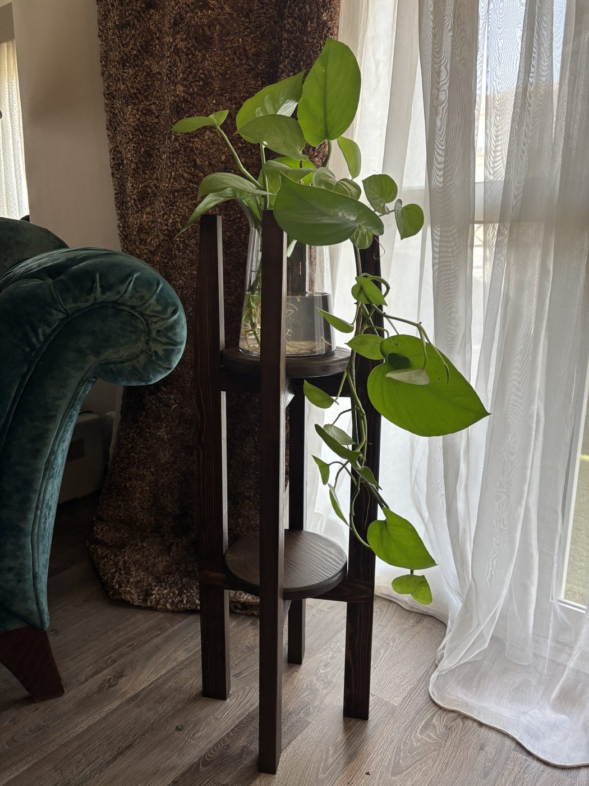
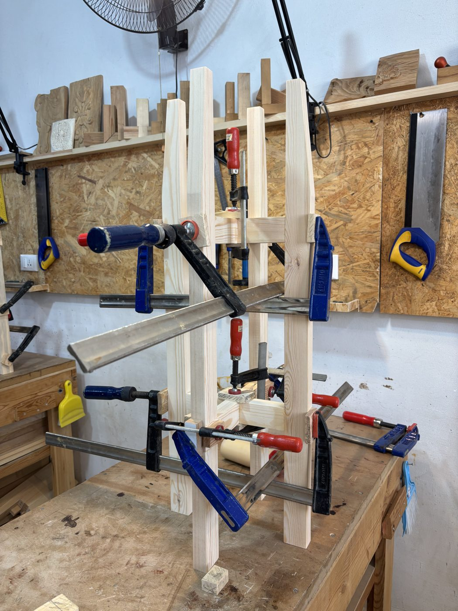
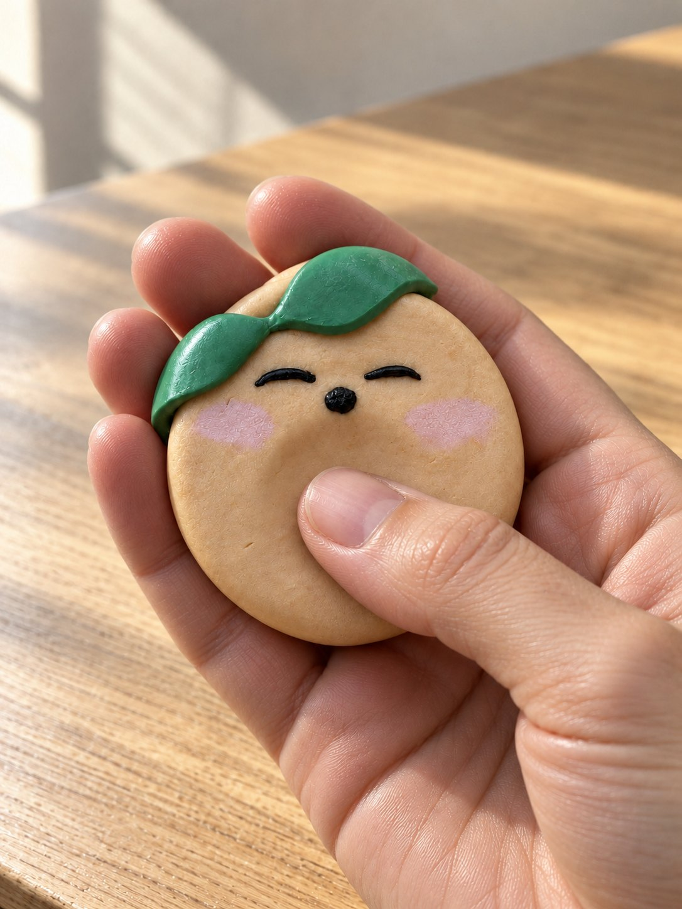

I make complex things simple enough to buy, use and learn.
Hi, I'm Salma Sabbour. Over fifteen years at SAP, Oracle and Gameball, I've worn five different hats, with one thread running through them all: I take something tangled and make it clear enough that people actually get it.
From design-thinking workshops with C-level buyers to owning RFP responses for mega deals, I turned complex software into a clear business case. My discovery mind maps became the standard in SAP's Digital Hub.
130+ enterprise engagements
Oracle · Presales manager
Presales skills, made easy to learn
Built and led a team of 11 across Egypt and Romania. I coached the junior presales and helped shape parts of their onboarding, so they got into real deals quickly.
100% of the team in live deals within year one
SAP · Global go-to-market
Sales enablement, made snackable
Produced a library of reusable demos, explainer videos and decks, plus an 18-episode podcast, so sales teams could pick up a pitch in minutes instead of days.
60% less prep · new hires demo-ready in a month
Gameball · Managed services
A new business line, made repeatable
Owned the P&L of a new service line and built it from scratch: fixed deliverables, how-to guides, and small tools for ROI and tier design. Simple to run, and it held up on real client work.
4× managed-services revenue
Gameball · Product marketing
Features, made clear and relevant
Rebuilt the release process from scratch on Claude, covering scripts, blog posts, newsletters and visuals, so every feature shipped with a clear "why it matters to you."
~70% of release comms automated
hat number six?
If your team has something tangled (a journey, a process, a product story), I'd like to hear about it.
New business line · P&L ownership · Service design
A new business line, built from scratch
I owned the P&L of Managed Services, a new revenue line next to the core product: loyalty management as a service. I turned one-off consulting into a repeatable offer: five stages from Discover to Operate, a standard deliverable at each step (a discovery mind map, a financial model, data-driven tier design, campaign plans, performance reviews), and Lovable tools that sped up the ROI, tier and uplift work. It became a growth lever, not just an add-on.
Revenue grew 4×, and the service was part of ~48% of closed deals.
Repeat purchase rate
6%
20%
non-redeemersfrequent redeemers
over a 5-month period
Frequent redeemers keep coming back more often.
Purchase frequency
Average order value
+32%
+14%
vs. their own first 5 months
They are buying more often, with larger basket sizes.
Total impact
4× LTV
frequent redeemers vs. non-redeemers
~12×incremental revenue per riyal of points redeemed
Program design · Loyalty economics · Cohort analysis
A loyalty program for a Saudi retail brand: designed it, then measured it
I designed the program, from points economics to campaigns, then ran the analysis of what it actually did. Over five months, 20% of frequent redeemers came back and bought again, against 6% of non-redeemers. They bought more often, spent more per order, and were worth four times as much over their lifetime. Redemption rate grew six-fold, from 2% to 12%.
Service design · Requirements · Prototyping
A new mall, four POS systems, one journey everyone could agree on
I took over the loyalty program for a new MENA shopping mall: owned stores on four different POS systems, tenant stores, a service desk, and a custom app and portal. I mapped it into six customer journeys, prototyped the app and service-desk portal in Lovable before development started, ran the app-partner selection, and led the weekly syncs with the dev team.
Instead of asking the client how they wanted it to work, I showed them a proposed design to react to.
my favourite project ✦
Go-to-market system · AI process design
From release to reach: a release process rebuilt on Claude
Features shipped every two weeks, and each one could need release notes, a newsletter, LinkedIn carousels, a blog and a demo video. I rebuilt that as a system: features are captured from Slack and ClickUp, sorted A/B/C by impact so effort goes where it matters, and eight Claude skills I wrote draft the scripts, copy, visuals and blog, then publish to the website. AI does the first draft; I make the calls, and nothing ships without my review.
~70% of release communication automated.
Hear me explain something
Release Video
At Gameball, I wrote every release video around one idea: customers don't care about features, they care about their problems. So each script opens with a situation they recognise, shows why it matters to them, and only then explains how the feature solves it, in plain language with no jargon.
SAP's sales teams needed a quick way to talk credibly about customer experience in industries they didn't know well. So I created CX Central Perk: 18 short episodes with field experts and tech partners, each giving sales and CS teams what they need to open an industry CX conversation in under 15 minutes.
A 50-second clip from The One Where You Start a CX Conversation with an FMCG.
The other side of me
When I'm not making things simple, I'm making things: with wood, with clay, with curiosity and with AI. Each one starts the same way: an idea, a first attempt, and a lot of learning in between.


BeforeAfter
‹ ›
CarpentryMade with woodInspired by a carpenter who came over to fix a sliding door, I decided to learn basic woodworking. During my learning journey, every mistake humbled me, and every finished joint made me proud. Watching a few planks of raw wood turn into a beautiful plant stand I made with my own two hands was so satisfying.

Polymer clayMade with clayThere's beauty in creating something you can hold and feel in your hands: imagining a design, mixing the colours, kneading the clay, putting it all together, then baking it in the oven. Polymer clay is where I turn my creative juices into something physically tangible. P.S. This one is the very first worry stone I made.Reclaiming WonderMade with curiosityWith a desire to reclaim the wonder kids naturally have and adults slowly lose, I started this series, answering everyday questions we never stop to think about, and explaining them so simply a child could follow. Watch episode 1 · Follow on TikTok
Side projectsMade with AI'Whatever the mind can conceive, it can achieve' has never been truer than today. I fish for everyday problems where AI can help, then build the fix myself, like the home budget app I use every day (made in a couple of hours with Claude Code). This page too.